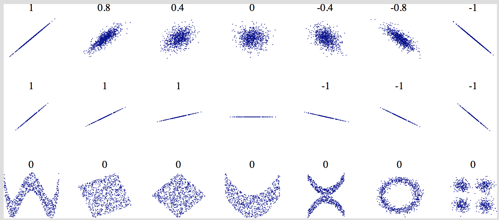

End-to-End ML Workflows
EDS 232 · Machine Learning in Environmental Science
In this lesson
We will walk through the core steps of an end-to-end ML project:
- Framing the problem and understanding the big picture
- Getting the data and doing preliminary exploration
- Creating and locking away a test set
- Exploring and cleaning the training data
- Preparing data for ML (scrubbing, scaling, encoding)
- Trying candidate models and evaluating with CV
- Diagnosing what went wrong and going back to the drawing board
- Final model selection, tuning, and evaluation
With your team, order the core steps for a ML workflow
- Understand the big picture
- Get the data and do a preliminary exploration
- Create a representative test set and lock it away
- Explore the train data to gain insights
- Consider attribute combinations
- Prepare train data for ML algorithms
- Try out different candidate models and estimate accuracy metrics with CV
- Go back to the drawing board if needed
- Select a model and fine-tune it
- Evaluate model on test set
🌟 Present your results!
Discussion about initial steps
Step 4 — Explore the training data
Goals of this step:
- Identify any cleaning or transformations needed
- Identify promising predictors
- Brainstorm new features worth computing
For each variable, study:
- Type (categorical, int/float, bounded/unbounded)
- % of missing values
- Noisiness (outliers, rounding errors)
- Type of distribution
- Whether it is plausibly useful for the task
Step 4 — Correlations
Plot each predictor against the target to uncover noise and correlations. Also compute pairwise correlations using .corr().
Important: .corr() only works for numerical variables and only measures linear association.
- Close to +1 → strong positive linear correlation
- Close to –1 → strong negative linear correlation
- Close to 0 → no linear correlation (but a non-linear relationship may still exist!)

Step 5 — Consider attribute combinations
Sometimes combining predictors produces a more informative feature than either one alone.
- Whenever possible, ground decisions in domain expertise
- This is an iterative process — revisit as the model develops
Step 6 — Scrubbing
High-quality training data is critical. Common issues:
- Omitted values (missing data)
- Duplicate observations
- Outliers
Potential fixes for each:
| Remove the observation |
Missingness is random and n is large |
| Impute (mean, median, KNN…) |
Losing observations is costly |
| Drop the entire feature |
Variable has too many missing values or is not useful |
Always keep a backup of the raw data before transforming!
Step 6 — Scaling
Many ML models perform better when features are on similar scales.
Standardization (StandardScaler): subtract the mean, divide by the standard deviation → zero mean, unit variance.
The target variable does not need to be scaled.
Linear scaling, clipping, and log-scaling are a few other ways you may want to scale your data. You can read a brief overview about each here.
Step 6 — One-hot encoding
Applied to categorical predictors.
Suppose you have a variable called biome with categories savanna, rainforest, grassland, and desert.
Most ML algorithms prefer to work with numerical variables, so we can transform this variable into numbers.
An easy way would be to assign each with a number:
savanna -> 0rainforest -> 1grassland -> 2desert -> 3
One issue with this approach is that a model would treat the consecutive numbers as a numerical variable that contains information about the relative order between them.
Step 6 — One-hot encoding
One-hot encoding creates a binary feature per class:
- new feature equals 1 when the observation belongs to the class,
- new feature equals 0 if the observation does not belong to the class.
For example, the one-hot encoding for the biome classes would look like:
| biome = savanna |
1 |
0 |
0 |
0 |
| biome = rainforest |
0 |
1 |
0 |
0 |
| biome = grassland |
0 |
0 |
1 |
0 |
| biome = desert |
0 |
0 |
0 |
1 |
Each row has exactly one 1 and all other values 0.
For linear models, drop one encoded column to avoid perfect multicollinearity (drop parameter in OneHotEncoder).
Step 7 — Try candidate models
Once you have a solid, clean training set:
- Select a few candidate models appropriate for the problem setup
- Train with default hyperparameters — don’t over-invest yet
- Estimate performance with cross-validation (or ROC curves for classification)
The goal is a quick, comparable baseline across model families. Tuning comes later.
Step 8 — Problems with the data
If, at this point, your results are bad, there are generally two things that could have gone wrong: “bad model” or “bad data”.
| Too small |
More high-quality data generally helps |
Collect more data |
| Nonrepresentative |
Sampling noise or bias |
Better sampling strategy |
| Poor quality |
Outliers, errors, missing values obscure signal |
Drop, correct, or impute |
| Irrelevant features |
Noise prevents the algorithm from finding signal |
Feature selection or extraction |
Step 8 — Problems with models
| Overfitting |
Model memorizes training noise; poor generalization |
Simpler model; more data; reduce variance via hyperparameters |
| Underfitting |
Model too simple to capture data structure |
More flexible model; more informative features |
Whatever the challenge: it’s ok to go back and experiment with different feature combinations and models.
Steps 9–10 — After model selection
9. Fine-tune the selected model.
Use cross-validation on the training set to search over hyperparameter combinations (e.g., GridSearchCV). All tuning decisions must use training data only — the test set stays locked!
10. Evaluate on the test set.
Evaluate exactly once. If test performance is much worse than your CV estimate, the model likely overfit during tuning.
🌟 Present your results.
Report the metric value and its practical meaning. Document the full pipeline, decisions made at each step, and any caveats about where the model may not generalize.
Exercise
Wetland carbon credit modeling
Scenario
A state environmental agency in Oregon is developing a wetland carbon credit program to incentivize private landowners to restore degraded coastal marshes.
The agency’s field teams surveyed 500 coastal wetland plots, measuring:
salinity_ppt — mean salinity (ppt)water_depth_cm — mean water column depth (cm)tidal_range_cm — mean tidal range (cm)soil_organic_pct — soil organic matter (%)
bulk_density_gcm3 — soil bulk density (g/cm³)vegetation_type — dominant plant guild (cordgrass / bulrush / pickleweed / sedges)
Target: carbon_seq_tco2 — annual carbon sequestration (tCO₂-eq/ha/yr)
No existing model in place. Credits currently assigned manually by ecologists.
Exercise 1
Read the scenario carefully. You are about to start working on this project.
List some key questions you would still need to answer before beginning data analysis and model development.
- What metric will be used? → MSE penalizes large errors, appropriate here since errors have direct financial consequences.
- What is the minimum acceptable performance? → The model needs a defensible accuracy threshold to be legally used for assigning credits.
- What is the current baseline? → Manual assignment by ecologists sets the bar. How consistent and accurate is that process?
- Is over- or under-prediction more costly? → Over-prediction = invalid credits issued (agency risk); under-prediction = landowners under-compensated. This asymmetry matters for how errors are communicated.
Exercise 2 — df.info() output
<class 'pandas.core.frame.DataFrame'>
RangeIndex: 500 entries, 0 to 499
Data columns (total 7 columns):
# Column Non-Null Count Dtype
--- ------ -------------- -----
0 salinity_ppt 500 non-null float64
1 water_depth_cm 500 non-null float64
2 tidal_range_cm 500 non-null float64
3 soil_organic_pct 400 non-null float64
4 bulk_density_gcm3 500 non-null float64
5 vegetation_type 500 non-null object
6 carbon_seq_tco2 500 non-null float64
dtypes: float64(6), object(1)
memory usage: 27.5+ KB
Exercise 2
Based on the df.info() output:
a) How many numerical and how many categorical features are there?
b) Are there any variables with a concerning amount of missing data? Which one(s), and roughly what percentage?
a) 5 numerical (salinity_ppt, water_depth_cm, tidal_range_cm, soil_organic_pct, bulk_density_gcm3) and 1 categorical (vegetation_type, dtype object).
b) soil_organic_pct has ~100 missing values out of 500 rows (~20%), visible from the non-null count in df.info(). This is substantial — it warrants a deliberate decision, not a default fix.
Exercise 3
A teammate suggests the next step is to standardize the entire dataset before fitting any models.
What is the problem with this approach?
Data leakage. Standardization requires computing the mean and standard deviation from the data. If those statistics are computed on the full dataset, information from future test rows contaminates the training process.
Correct procedure:
- Split into train and test sets first
- Compute mean and SD only on the training set
- Apply those same values to scale both train and test
This ensures the test set remains a clean simulation of unseen data.
Exercise 6 — Predictor distributions
Exercise 6
Looking at the distributions above:
Should you plan on scaling the data before fitting models? Which predictors would benefit most from scaling, and why?
Yes. The predictors span very different numeric ranges (salinity ~0.5–35 ppt; tidal range ~5–300 cm). Without scaling, models sensitive to feature magnitude (SVMs, KNN) would give disproportionate weight to variables with larger ranges regardless of their actual predictive value. Three of the five predictors are also right-skewed, so extreme observations could have outsized influence. Standardization addresses both issues. The target variable does not need to be scaled.
Exercise 4 — Scatter plots & correlations
| salinity_ppt |
-0.236 |
| water_depth_cm |
0.115 |
| tidal_range_cm |
0.053 |
| soil_organic_pct |
0.456 |
| bulk_density_gcm3 |
0.010 |
Exercise 4
a) Which predictor(s) would you flag as candidates for removal because they add noise without contributing useful signal?
. . .
bulk_density_gcm3: scatter plot shows no pattern; correlation near zero. Consistent with a variable that adds noise without predictive information.
b) Is there a predictor with low linear correlation but a meaningful non-linear relationship in the scatter plot?
. . .
salinity_ppt: shows an inverted-U arch — sequestration peaks at brackish values (~15–20 ppt) and drops at both extremes. Positive and negative deviations cancel in the linear correlation, producing near-zero correlation. The scatter plot reveals what the correlation hides.
Exercise 5
soil_organic_pct has approximately 20% missing values.
1. What questions would you ask the agency to better inform how to handle the missing data?
2. For each approach below, discuss one advantage and one disadvantage: a) Remove observations with missing values. b) Impute with the mean. c) Drop the feature entirely.
a) Remove: Simple; no artificial values. But loses ~20% of observations; may introduce bias if missingness is non-random.
b) Impute with mean: Preserves all observations. But distorts the distribution; imputed value may be misleading if missing plots are systematically different.
c) Drop the feature: Sidesteps missing data entirely. But soil_organic_pct shows one of the stronger correlations with the target — dropping it discards real predictive signal.
Exercise 7 — One-hot encoding
Three observations from the training set, each from a different vegetation type:
| 1 |
cordgrass |
10.06 |
29.3 |
139.7 |
16.8 |
0.645 |
| 2 |
sedges |
33.50 |
16.1 |
19.7 |
32.1 |
0.791 |
| 3 |
pickleweed |
21.34 |
12.6 |
47.5 |
10.6 |
1.033 |
One-hot encode the vegetation_type column for these three observations. What are the column names, and what value (0 or 1) does each observation get in each column?
Exercise 7 — Answer
Four categories in the full dataset → four binary columns (alphabetical order):
| 1 |
cordgrass |
0 |
1 |
0 |
0 |
| 2 |
sedges |
0 |
0 |
0 |
1 |
| 3 |
pickleweed |
0 |
0 |
1 |
0 |
Each row has exactly one 1 and three 0s. The original column is dropped. Note that bulrush doesn’t appear in this subset, but the column is still created.
Exercise 8
Your team has cleaned and prepared the training data and is ready to start fitting models.
Brainstorm at least three candidate models you could try as a starting point for this regression problem. For each, briefly justify why it is a reasonable choice.
- Linear regression: natural first baseline for any regression problem. Fast, interpretable, and establishes a performance floor. If more complex models can’t beat it, revisit the data.
- KNN regression: makes no assumptions about the functional form — can capture non-linear patterns like the quadratic salinity effect without feature engineering.
- Decision tree / random forest regression: handles non-linearities and feature interactions automatically, works with mixed numerical and categorical features, and provides feature importances — useful when the agency wants to understand which site characteristics drive sequestration.
In practice: fit all candidates with default hyperparameters first, compare CV-based MSE, then invest in tuning the most promising model.